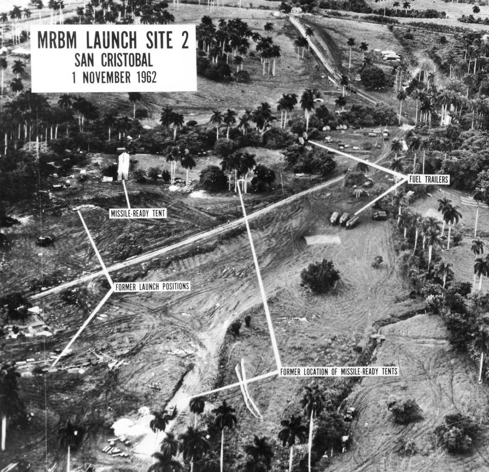
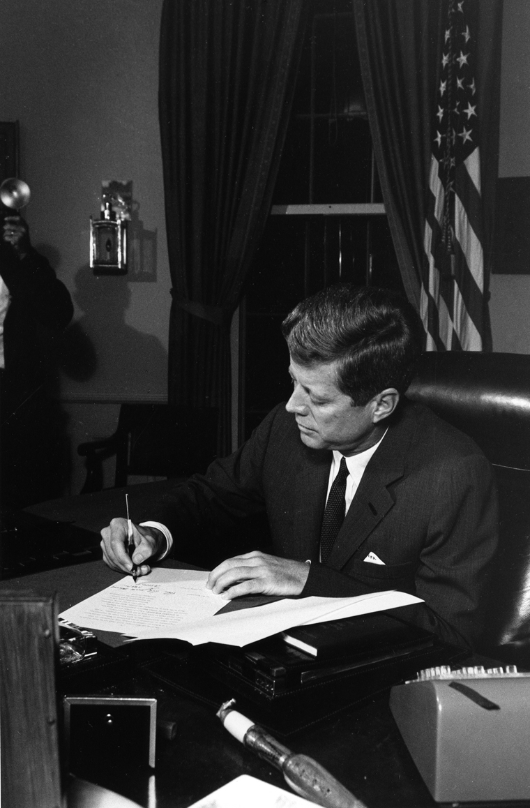

Directions: Work through the five stations in order. Each station holds one record from the missile crisis, quoted from the edition named in its Source line, with cuts marked by ellipses. As you work, keep the day by day ledger in Part 2: for each dated step, enter what each side knew, what was offered or done, and what was risked. At the end, find the settlement's two parts in the documents and judge which of Khrushchev's two letters mattered more.
Source: United States Air Force, "U-2 reconnaissance photo of Soviet missile sites in Cuba," October 14, 1962 (U.S. government photograph; image described), as carried in the audited source record. The description below is the record's description of the photograph. Photograph: United States Air Force, via Wikimedia Commons.

"Visual description: A grainy black-and-white aerial photograph taken from high altitude shows cleared sites in the Cuban countryside with long shapes identified as missile transporters and launch equipment. Military analysts marked the installations visible in the frame."
What does the photograph itself show, and what part of what a viewer learns from it comes from the analysts' markings rather than from the image?
The record says the sites sat ninety miles from Florida and could give the Soviet Union a strike capability against much of the eastern United States. Why did range and warning time, not just the missiles themselves, make this an emergency?
What can a photograph like this one not tell a president? Name two questions Kennedy still had to answer without it.
Source: John F. Kennedy, "Address on the Soviet Arms Buildup in Cuba," October 22, 1962 (Miller Center transcript, from audio), as carried in the audited source record. Cuts are marked with bracketed ellipses as the record prints them. Photograph: Cecil Stoughton, White House, John F. Kennedy Presidential Library, via Wikimedia Commons.

"Within the past week, unmistakable evidence has established the fact that a series of offensive missile sites is now in preparation on that imprisoned island. The purpose of these bases can be none other than to provide a nuclear strike capability against the Western Hemisphere. [...]
To halt this offensive buildup a strict quarantine on all offensive military equipment under shipment to Cuba is being initiated. All ships of any kind bound for Cuba from whatever nation or port will, if found to contain cargoes of offensive weapons, be turned back. [...]
It shall be the policy of this nation to regard any nuclear missile launched from Cuba against any nation in the Western Hemisphere as an attack by the Soviet Union on the United States, requiring a full retaliatory response upon the Soviet Union."
Kennedy calls the action a quarantine, not a blockade. From the passage and the lesson vocabulary, explain what he ordered at sea and why the word he chose was itself part of the policy.
The third passage is deterrence stated as a public threat. What attack is it meant to prevent, and what response does it promise, against whom?
What does this public address not tell the American people? Name two things Kennedy knew or was considering that do not appear in it.
Source: John F. Kennedy, "Letter to Chairman Khrushchev," October 27, 1962 (Yale Avalon Project), as carried in the audited source record. The October 26 letter itself is carried here in the form Kennedy's reply gives it: his reading of its key elements, quoted verbatim from that reply. Cuts are marked by ellipses.
"I have read your letter of October 26 with great care and welcomed the statement of your desire to seek a prompt solution to the problem. [...]
As I read your letter, the key elements of your proposals [...] are as follows:
1. You would agree to remove these weapons systems from Cuba under appropriate United Nations observation and supervision; and undertake, with suitable safeguards, to halt the further introduction of such weapons systems into Cuba.
2. We, on our part, would agree [...] (a) to remove promptly the quarantine measures now in effect and (b) to give assurances against an invasion of Cuba [...]"
State the trade the October 26 letter proposed, in one sentence for each side: what the Soviet Union would do, and what the United States would do.
This station reaches you through Kennedy's summary rather than through Khrushchev's own full text. What does that do to the evidence? Name one thing a summary by the other side can hide or reshape.
Notice what this proposal does not mention: Turkey. Hold that fact for Station 4, and write here why its absence made this letter the easier one for Kennedy to answer.
Source: Nikita Khrushchev, "Letter to President Kennedy," October 27, 1962 (U.S. Department of State Division of Language Services translation, published by the John F. Kennedy Presidential Library), as carried in the audited source record. This is the second letter, the harder one, made public on October 27. Cuts are marked by ellipses.
"You are disturbed over Cuba. You say that this disturbs you because it is 90 miles by sea from the coast of the United States of America. But Turkey adjoins us; our sentries patrol back and forth and see each other. Do you consider, then, that you have the right to demand security for your own country and the removal of the weapons you call offensive, but do not accord the same right to us? You have placed destructive missile weapons, which you call offensive, in Turkey, literally next to us. [...]
I therefore make this proposal: We are willing to remove from Cuba the means which you regard as offensive. We are willing to carry this out and to make this pledge in the United Nations. Your representatives will make a declaration to the effect that the United States, for its part, considering the uneasiness and anxiety of the Soviet State, will remove its analogous means from Turkey."
What condition does this letter add to the October 26 proposal? State it exactly, with the country and the weapons named.
Khrushchev builds his case on a comparison. State the comparison in your own words, and say what makes it hard for an American reader to answer.
Kennedy's advisers answered the October 26 letter and set this one aside in public. From the two stations, explain the strategy in that choice: what did answering the first letter allow Kennedy to accept, and what did it allow him to avoid accepting in public?
Source: Anatoly Dobrynin, "Cable reporting the Robert Kennedy meeting," October 27, 1962 (Atomic Archive; released from Russian Foreign Ministry archives; punctuation normalized), as carried in the audited source record. Dobrynin, the Soviet ambassador in Washington, cabled Moscow after a secret meeting with Attorney General Robert Kennedy on the night of October 27. Cuts are marked by ellipses.
"Late tonight R. Kennedy invited me to come see him. We talked alone. [...]
'The situation might get out of control, with irreversible consequences.' [...]
'And what about Turkey?' I asked R. Kennedy.
'If that is the only obstacle to achieving the regulation I mentioned earlier, then the president doesn't see any unsurmountable difficulties in resolving this issue,' replied R. Kennedy. 'The greatest difficulty for the president is the public discussion of the issue of Turkey. [...] However, President Kennedy is ready to come to agree on that question with N.S. Khrushchev, too. I think that in order to withdraw these bases from Turkey,' R. Kennedy said, 'we need 4-5 months.' [...]
'However, the president can't say anything public in this regard about Turkey,' R. Kennedy said again. R. Kennedy then warned that his comments about Turkey are extremely confidential; besides him and his brother, only 2-3 people know about it in Washington."
What did Robert Kennedy offer on Turkey, and on what two conditions? Name the time he asked for and the condition about publicity.
Why would a public trade have damaged the United States in a way a secret one would not? Use Dobrynin's own report of Robert Kennedy's reasoning about NATO.
This cable was secret when it was written and stayed in Russian archives for years. What does its existence do to the public story Americans were told in 1962 about how the crisis ended?
Enter the ledger from your station answers and the reading. One row for each dated step.
| Day | What each side knew | What was offered or done | What was risked |
|---|---|---|---|
| Oct 14 | |||
| Oct 16 to 21 | |||
| Oct 22 | |||
| Oct 24 | |||
| Oct 26 | |||
| Oct 27, day | |||
| Oct 27, night | |||
| Oct 28 |
Close the file with a verdict. First, find the settlement's two parts in the documents and name the station where each part appears. Then judge: which letter mattered more, Khrushchev's of October 26 or his of October 27? Defend your judgment from the stations, and answer the strongest argument for the other letter.
Image and markings. The photograph itself shows cleared ground, shapes, and installations from high altitude. The identification of those shapes as missile transporters and launch equipment, and the marking of the installations, is the analysts' work laid over the image. Students should see that the evidence Kennedy acted on was a photograph plus an expert reading of it, and that the reading is where error or argument could enter. (Blueprint 10)
Range and warning time. Missiles in Cuba sat ninety miles from Florida and could strike much of the eastern United States with little warning, which removed the response time geography had always given the United States and put Soviet weapons closer to American cities than any Soviet based missile of 1962 could reach in numbers. (Blueprint 10)
What a photograph cannot tell. It cannot show intention, readiness, warheads, or timetable: whether the sites would be completed, whether nuclear warheads were on the island, what Khrushchev meant to bargain with them or fire them, and what Castro knew. Any two earn credit. (Blueprint 10)
Quarantine, not blockade. Kennedy ordered a strict quarantine on all offensive military equipment under shipment to Cuba, with ships carrying offensive weapons turned back. The word was part of the policy because a blockade is legally an act of war and a quarantine was not, so the naming held a step in reserve and left Khrushchev room to retreat without answering a declared act of war. (Blueprint 10)
The deterrence passage. It is meant to prevent a nuclear missile launch from Cuba against any nation in the Western Hemisphere. It promises that such a launch will be treated as a Soviet attack on the United States, requiring a full retaliatory response upon the Soviet Union itself, not only upon Cuba. (Blueprint 10)
What the address omits. It does not disclose the air strike and invasion planning then under way, the secret deliberations of the previous week, any willingness to discuss the Jupiter missiles in Turkey, or the scale of American uncertainty about warheads and readiness. Any two earn credit. (Blueprint 10)
The trade. Soviet side: remove the weapons systems from Cuba under United Nations observation and halt the further introduction of such weapons into Cuba. American side: remove the quarantine promptly and give assurances against an invasion of Cuba. (Blueprint 10)
The summary problem. A summary by the receiving side selects and phrases the other side's offer. Tone, qualifications, and context can be softened or dropped, and the reader cannot check what was left out. Students should name the mediation plainly: this station is Kennedy's reading of Khrushchev, not the full letter. (Blueprint 10)
Why the absence of Turkey helped. Without a Turkey condition, Kennedy could accept the offer as a clean exchange of missiles for a no invasion pledge, with no public dealing over an ally's territory and no appearance of trading under pressure. (Blueprint 10)
The added condition. Alongside the withdrawal of the Soviet means in Cuba, the United States would publicly remove its analogous means, the Jupiter missiles, from Turkey, with the pledges made in the United Nations. (Blueprint 10)
The comparison. Cuba is ninety miles from the American coast, and Turkey adjoins the Soviet Union. Khrushchev argues that if proximity makes Soviet weapons in Cuba offensive and intolerable, the same measure makes American weapons in Turkey offensive to the Soviet Union, and that Washington cannot claim a right it denies Moscow. Students should state why it is hard to answer: the geography in the comparison is accurate, whatever one thinks of the deployment's secrecy or purpose. (Blueprint 10)
The strategy of answering the first letter. Accepting the October 26 terms let Kennedy close on missiles out for a no invasion pledge, the trade he could announce. Setting the October 27 letter aside in public let him avoid a public Turkey trade, which the Dobrynin cable shows was then handled in secret instead. (Blueprint 10)
The offer and its conditions. Robert Kennedy said the president saw no unsurmountable difficulty in withdrawing the bases from Turkey and needed four to five months to do it. The conditions were time, four to five months, and secrecy: nothing public could be said about Turkey, and only a handful of people in Washington knew. (Blueprint 10)
Why public was different. In Dobrynin's report, Robert Kennedy argued that the Turkish bases had been placed by a decision of the NATO Council, so a unilateral public withdrawal announced under Soviet pressure would damage the structure of NATO and the American position as its leader. A quiet removal months later could be presented as an American decision. (Blueprint 10)
What the cable does to the public story. The public story of 1962 was a Soviet retreat met by an American pledge on Cuba alone. The cable records a second, secret part of the settlement, a Turkey withdrawal agreed the same night, which both governments denied at the time and later evidence established. The documents leaders publish and the bargains they make were not the same thing in October 1962. (Blueprint 10)
Ledger, in brief. Oct 14: American analysts identify missile sites from a U-2 photograph; Moscow and Havana do not know the secret is out; risk, acting on a reading of a photograph. Oct 16 to 21: Kennedy and the Executive Committee deliberate in secret while site work continues; the public knows nothing; risk, a leak or a completed site before a decision. Oct 22: Kennedy announces the discovery, the quarantine, and the retaliation warning; risk, Soviet ships testing the line. Oct 24: the quarantine takes effect and some Soviet ships turn back, while construction speeds up; risk, a shooting at sea. Oct 26: Khrushchev offers withdrawal for a no invasion pledge; risk, the offer lapsing. Oct 27, day: a second letter adds Turkey publicly, a U-2 is shot down over Cuba killing Major Anderson, and another U-2 strays over Siberia; risk, events escaping both leaders. Oct 27, night: Robert Kennedy secretly assures Dobrynin on Turkey, four to five months, nothing public, and asks for an answer within a day; risk, exposure of the secret channel. Oct 28: Khrushchev announces the withdrawal; the crisis ends on the public terms. (Blueprint 9 and 10)
Full credit verdicts name both parts of the settlement from the documents, the public part at Stations 2 and 3 (missiles out, quarantine lifted, no invasion assurances) and the secret part at Station 5 (the Jupiter withdrawal from Turkey, confirmed as Khrushchev's public demand at Station 4 and as Robert Kennedy's secret assurance in the cable). On which letter mattered more, either judgment can earn full credit when it is argued from the file. For October 26: it supplied the terms Kennedy could accept and did accept, and the settlement announced on October 28 follows its shape. For October 27: it named the price that actually closed the bargain, since the Turkey assurance that night followed its demand, and without it there is no evidence in the file that Moscow would have settled on the public terms alone. The strongest counterargument must be answered, not ignored: a verdict for October 26 must explain the secret Turkey assurance, and a verdict for October 27 must explain why Kennedy never accepted it in public and the announced settlement omits it.